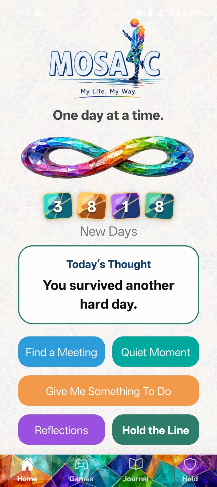

My Life. My Way.
Mosaic is a private personal support app built from lived experience. It is designed for everyday encouragement, reflection, reminders, support, and moments when a person needs something simple to hold onto.
How Mosaic Can Help
Mosaic is being built to give people a private place to return to when they need encouragement, structure, reflection, or support.
- Count new days.
- Find meetings and support options.
- Use Hold the Line when things feel difficult.
- Read reflections.
- Journal privately and check in with your mood.
- Take a Quiet Moment.
- Save useful supports and contacts.
- Use planning tools, reminders, and features in your own way.
A Note from Steve
AA officially began in 1935 after Bill W. met Dr Bob in Akron, Ohio. Its purpose is simple but powerful: one alcoholic helping another.
I can only speak from my own experience, but I would not be here today without AA.
My name is Steve Condra, and I am proud to be a recovering alcoholic.
Welcome to Mosaic. I sincerely hope you like the app.
I was born and raised on the north side of Dublin. I moved to County Clare in 1995, lived there for 20 years, and now live in Waterford, where Mosaic was developed. After returning to university at South East Technological University to study computer science, I entered the Student Inc. programme at the end of my first year.
I developed Mosaic because I wanted to help people who may find themselves in the same situation I was in. There is help out there, but there are also times when help can feel far away. The more rural you get, the harder that can be. But it is no picnic in the cities either.
Mosaic creates the space, but only you can give it meaning.
What does that mean? It means I tried to design Mosaic so it can become your own personal support space. You can use the parts that help, ignore the parts that do not, and keep things private. Nothing is shared unless you choose to share it.
I built this as honestly as I could from my own experience. I included the things I wished had been there for me. Then, through the guidance of the Student Inc. programme, I spoke to professionals and people connected to recovery, and Mosaic continued to grow from there.
Your privacy matters to Mosaic. If there is no legal requirement to collect, store, or share something, Mosaic does not want it.
There are no mechanisms in Mosaic to collect your journal, reflections, saved supports, or personal notes outside your phone. Anything you save for yourself stays on your phone.
There is no pressure in Mosaic. That is important to me.
This app is not here to tell you off, chase you, judge you, or make you feel like you have failed because you did not open it every day. You can use it today and not look at it again for a week. You can use one part of it and ignore the rest.
It is your app, your recovery, and your choice.
I hope it helps you in some small way. Play a game. Kill a craving. Read something. Save a support. Count a new day. Use what helps.
More information about Mosaic will be added soon. Please send in your suggestions, because this is your app. It should work the way you want it to work, have what you want it to have, and do what you want it to do.
Thanks for reading.
Best of luck,
Steve
Current Stage
Mosaic began through South East Technological University's Student Inc. programme in 2026. Since then, the project has progressed through research, customer discovery, and prototype development.
Feedback has been gathered from more than 150 people in recovery and more than 65 professionals. Work with recovery services on focus groups and hands-on testing is helping guide what gets improved next.
Mosaic is still in development. The next steps are to refine the prototype, test it with users, and prepare it for release.
Prototype Preview
